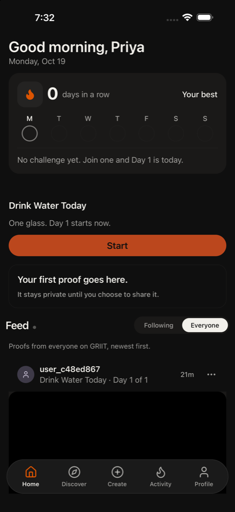

1. home tap Profile
Home shows streak 0 days in a row and 'Day 1 starts now'. I've supposedly used this for a month, so that already looks off. Going to Profile to check my numbers.
Confusion: Streak says 0 and 'No challenge yet' even though I've been doing this for a month
neutral · 13316ms